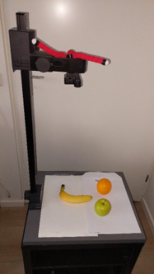
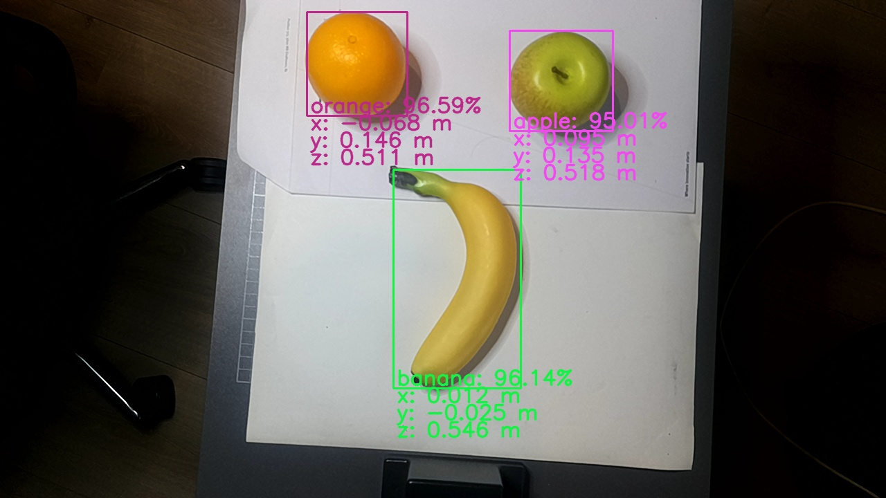

Applicaties
Yolo spatial(ruimtelijk) network detector
Deze appilicatie demonsteert de cassificatie en positie van een object gedetecteerd met een neuraal netwerk. De positie van het object is relatief t.o.v de camera.
ros2 launch my_depthai_python spatial_detector.launch.py


Configuratie neuraal netwerk
Om een eigen netwerk te gebruiken plaats je het .rvc2.tar.xz archief van je netwerk in de resources map van de my_depthai_python package en modificeer het spatial_detector.yaml bestand uit de config map van de my_depthai_python package.
Vervang de volgende regel:
nn_archive: SimpleFruitsYoloV8.rvc2.tar.xz
door:
nn_archive: "<my_yolo_network>.rvc2.tar.xz"
Verklaring ROS topics (ros2 topic list)
Topic |
Type |
Beschrijving |
|---|---|---|
|
|
RGB-beeld van de kleurencamera (BGR8). |
|
|
Intrinsieke cameraparameters (brandpuntsafstand, distortie) behorend bij het RGB-beeld. |
|
|
Gekleurde dieptevisualisatie (BGR8, COLORMAP_HOT) van de stereocamera. |
|
|
Ruwe metrische dieptedata in millimeters (mono16), geschikt voor afstandsberekeningen. |
|
|
Gedetecteerde objecten met klasse, confidence, bounding box en 3D-positie (XYZ in meters) t.o.v. de camera. |
|
|
URDF-beschrijving van de camera, gepubliceerd door de robot_state_publisher (optioneel, alleen bij |
/color/yolov4_spatial_detections topic voorbeeld:
Hier is een voorbeeld van een bericht dat wordt gepubliceerd op het /color/yolov4_spatial_detections topic, dat de resultaten van een YOLOv4-ruimtelijke detectie bevat. Dit bericht is in YAML-formaat en toont de gedetecteerde objecten, hun klassen, scores, bounding boxes en 3D-posities ten opzichte van de camera.
header:
stamp:
sec: 1779299981
nanosec: 965254354
frame_id: oak_rgb_camera_optical_frame
detections:
- results:
- class_id: '1'
score: 0.9013671875
bbox:
center:
position:
x: 485.0
y: 270.5
theta: 0.0
size_x: 310.0
size_y: 489.0
position:
x: 0.1642097681760788
y: 0.04885092377662659
z: 0.906000018119812
is_tracking: false
tracking_id: ''